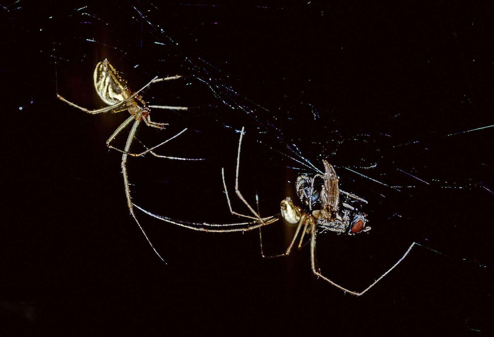

The Sierra Dome spider (Neriene litigiosa, formerly Linyphia litigiosa) is a North American sheet-weaving spider in the family Linyphiidae known for its unusually complex mating system, including female-controlled sperm use, elaborate male–male competition and intersexual courtship, extended mate guarding under female control, and conditional male kleptoparasitism.

The Sierra dome spider has served as a model system in evolutionary behavioral ecology through more than four decades of field and laboratory research by Paul J. Watson and his collaborators and assistants. Its accessible webs, elaborate courtship, and conspicuous individual variation make it unusually well suited to connecting reproductive behavior with development, physiology, microbial relationships, and offspring performance.
I began the Sierra dome spider research at Flathead Lake Biological Station in northwestern Montana in 1980. The published work and retained studies now connect female signaling, male–male competition, mate acceptance, unequal paternal contributions, physiological performance, and early offspring growth. The next questions ask how those reproductive outcomes emerge from the lives of particular males and females, rather than from one universal ranking of good and poor mates.
Females help organize the competition determining their first mate before they are sexually mature. Late in the penultimate instar, their associative behavior elicits prolonged guarding and a championship series of male contests. The champion present at maturation normally becomes the first mate and, on average, the principal sire. Secondary males obtain their opportunities through a different route: precopulatory strumming that elicits the receptivity of an already-mated female.
Both kinds of mate then perform prolonged aspermic copulatory courtship with sperm-free pedipalps before loading fresh semen and inseminating. The stages are visibly distinct, and the semen is externally deposited on a sperm web before the male takes it into his palpi. These features let us connect a known male’s performance to material he is about to contribute, while distinguishing mate choice from the later processes determining sire success. Accepting insemination does not guarantee that a male will father a substantial share of the brood.
Females most often mate with two to four males while rejecting many more suitors. Their accepted mates make markedly unequal genetic contributions. My working hypothesis is that the composition and weighting of those sires can provide useful complementarity, depending on the female’s own constitution, previous matings, health, and the circumstances her offspring will encounter. The aim is to explain expected whole-brood fitness—the combined prospects of her offspring for survival, development, and eventual reproduction—not simply to show that more diversity is always better.
The male-personality investigation began in 2024 and continued in 2025. It follows identified individuals through repeated courtship, fighting, and nighttime exploration. The proposed next phase would deepen those adult histories and begin observing males earlier, while they still occupy their own immature foraging webs. Growth, prey capture, resource defense, and maturation could then be linked to the adult’s distinctive way of pursuing reproductive opportunities.
Personality here means recognizable behavioral tendencies and characteristic responses to circumstances, not a fixed routine. I hypothesize that development helps organize behavior with physical capacities, physiology, experience, and potentially regulated microbial assistance. A male makes the best of the cards he has been dealt. He need not become a better or worse version of one ideal male, and his most effective approach may differ from that of another male with different capacities or experience.
I use “reproductive genres” for potentially recurring, overlapping combinations of these whole-organism traits. They are not rigid alternative mating types. Every male retains a mixed, opportunistic repertoire: a championship winner can later court an already-mated female, and a male unlikely to win a long series of fights can take an available first mating. The question is whether recurring forms of developmental organization predict characteristic contributions that particular females find useful. Individuality within a genre would remain part of the explanation, not noise to remove.
The microbial component is broader than pathogen avoidance. Under the mating-system metagenomics framework, I want to investigate how host–microbe relationships help construct, sustain, and reveal reproductive capacities. Immune regulation may help recruit and manage useful microbial functions as well as defend against harmful ones. Those functions could expand what a particular individual can accomplish, in ways contingent on its genotype, developmental history, nutrition, and microbial environment.
The corresponding female-choice question is whether behavior and chemical cues reveal those capacities, and whether selecting particular sires gives offspring useful inherited responsiveness. Offspring would not have to copy the father’s personality or inherit his exact microbial community. They might instead inherit regulatory capacities helping them establish appropriate associations and develop effective phenotypes under their own circumstances. Gene expression and epigenetic regulation belong in that developmental account alongside microbial identity and function.
The work has a molecular foundation: individual-spider screening and a pooled-body metagenomic investigation begun in 2021 identified bacterial candidates and recovered substantial portions of several genomes. The next steps would connect those results to known individuals, distinguish useful functions from mere presence, and investigate the agents and consequences of the reproductive-failure syndromes observed over many seasons. These are opportunities to explain both effective functioning and conspicuous failure.
A further hypothesis asks whether the same processes helping construct a male’s integrated phenotype also influence the distribution of genetic contributions represented in his sperm, with additional discrimination in the female. More functionally specific and legible offerings could make it easier for her to assemble complementary contributions from a small number of mates. Such filtering would not make sperm genetically uniform or create variants the parents do not carry. The proposed connection among development, microbial functioning, within-sire variation, and offspring outcomes remains to be tested.
The immediate priorities are the developmental study and the early host–microbe investigations. A successful 2025 laser-vibrometry pilot supplies a route toward finer measurements of courtship and female replies. Longer-term collaborations could investigate chemical credentials, immune regulation, reproductive anatomy, parentage, and the consequences of paternal contributions for sons and daughters. The breadth is an invitation to focused, connected projects, not a demand that one person undertake every method.
Several additional investigations have substantial material already waiting: the associative-female skipping study, extensive copulatory-courtship energetics records, a smaller study of investment in first versus secondary matings, a biochemical pilot on late-courtship effort, and hundreds of photographs connecting facial and cheliceral anatomy to known reproductive histories. The detailed research page explains both their opportunities and what remains unresolved. A career can begin with one of these questions and develop in directions neither the original investigator nor a prospectus can anticipate.
I welcome inquiries about possible participation in summer 2027 and beyond. Field access, accommodation, supervision, and financial arrangements for 2027 remain to be confirmed; this is an invitation to a scientific conversation, not an offer of a confirmed placement. Prospective collaborators can also discuss work with retained data and methods whose feasibility does not depend on promising a particular field arrangement in advance.
→ Full Research Program on the Sierra Dome Spider
Taxonomic clarification: The Sierra Dome spider is Neriene litigiosa (formerly Linyphia litigiosa), the species studied extensively in this research program. It should not be confused with bowl-and-doily spiders in the genus Frontinella, such as Frontinella communis or F. pyramitela, which belong to a different genus within the same spider family and subfamily (Linyphiidae and Linyphiinae, respectively). Species of Frontinella exhibit very different behavioral ecology. Several studies of the sexual behavior of bowl-and-doily spiders were conducted by Robert B. Suter and associates at Vassar College, including “The Courtship of Frontinella Pyramitela (Araneae, Linyphiidae): Patterns, Vibrations and Functions”.
Comparative evolutionary behavioral ecology studies of the sexual selection systems of holarctically distributed Neriene species, as well as different genera of sheetweb-weaving members of the subfamily Linyphiinae, would form the basis of a fascinating career.
The Sierra Dome spider was featured in the Natural History magazine article “Dancing in the Dome” (Watson, 1995), which introduced a broad audience to the species’ unusual mating system, including intense male–male competition and female-controlled reproductive outcomes.